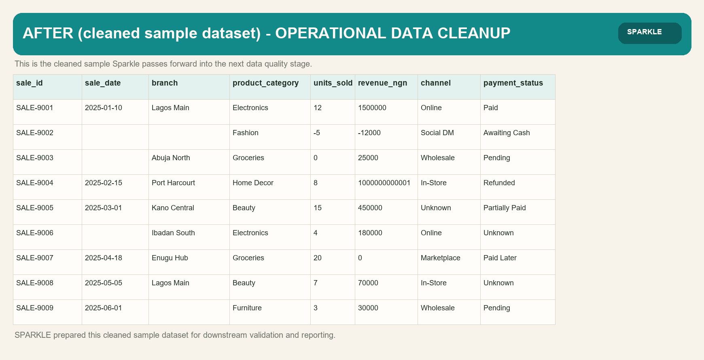
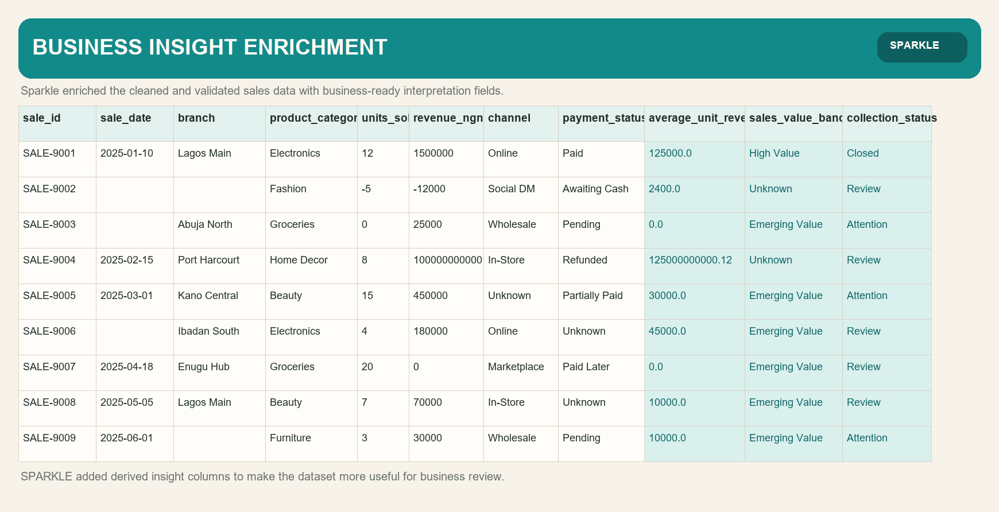
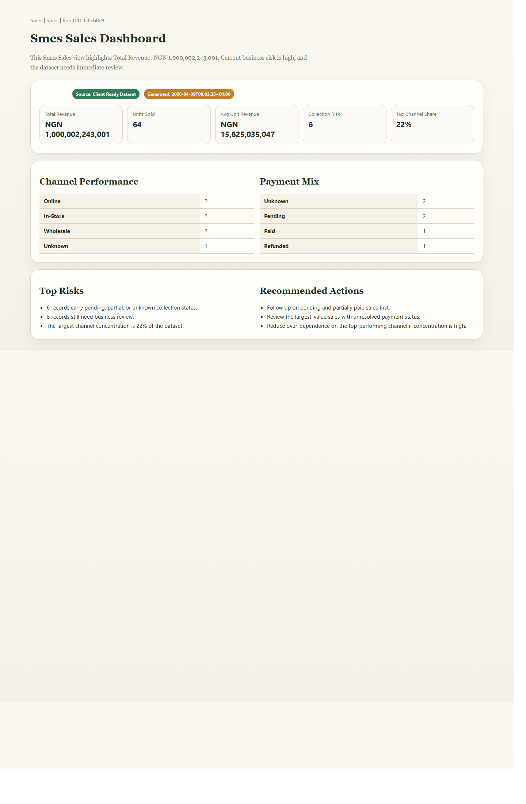

Operational Data Cleanup
Fixes dates, identifiers, mapped values, blanks, duplicates, and presentation-level inconsistency without inventing data.
Sparkle cleans inconsistent records, validates data integrity, enriches business meaning, and structures final outputs your team can actually use for reporting, review, and delivery.
Sparkle is a service-led data workflow for teams that need their operational datasets cleaned, checked, enriched, and prepared for serious business use.
Fixes dates, identifiers, mapped values, blanks, duplicates, and presentation-level inconsistency without inventing data.
Flags errors, warnings, and review-needed records so bad data does not quietly move downstream.
Adds derived columns and mapped business labels that improve analysis, segmentation, and reporting usefulness.
Shapes the final output into a cleaner delivery package with business-facing dashboards and structured datasets.
Sparkle is built for teams that depend on operational spreadsheets and CSVs but need clearer data before reporting, review, or client delivery.
Sales, customer, inventory, procurement, and other operational datasets that need cleaning and business-ready structure.
Fees, attendance, exams, and enrollment data that need integrity checks, review signals, and cleaner reporting outputs.
Production, field operations, inventory, and produce-sales data that need clarity before management decisions.
These are example Sparkle outputs from a sample SME sales journey, showing the progression from messy inputs to business-facing outputs.





Sparkle is designed as a connected dataset journey so the final output remains traceable, understandable, and useful.
You share the dataset and the business context around what the output needs to support.
Sparkle cleans, validates, enriches, and structures the dataset in the right sequence for the job.
Weak records, integrity findings, and business-facing signals are surfaced clearly for follow-up.
You receive structured outputs and dashboards that are easier to trust, explain, and work with.
Sparkle is built around controlled outputs, connected run journeys, and evidence-led presentation instead of decorative automation.
Dashboards and stage outputs are tied to actual runtime evidence, not invented examples.
Cleanup, validation, enrichment, structuring, reporting, and delivery stay connected across the same job flow.
Client-facing artifacts appear only when the delivery journey has actually reached the right point.
If your team is working with messy operational spreadsheets or CSVs, Sparkle can help turn them into cleaner, more usable business outputs.